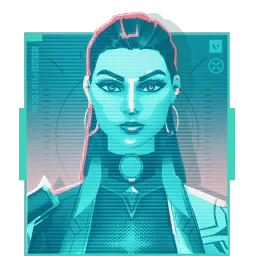
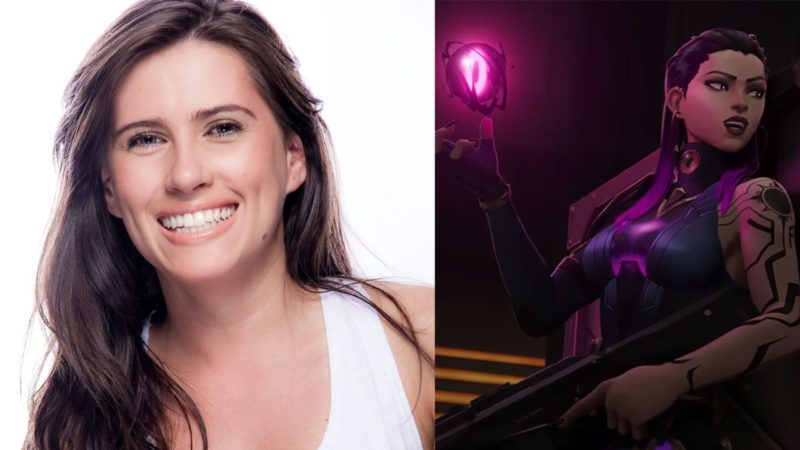

Curiosidades da Reyna
Forjada no coração do México, Reyna é o quarto duelista lançado no Valorant, sendo um duelista de primeira linha se alimentando de abates, muitos jogadores adoram usar seu conjunto de habilidades pois é um agente que requer um equilibrio entre agressividade e imprevisibilidade e aqui vamos te mostrar tudo o que você precisa saber sobre ela
Sobre ela
O nome verdadeiro da Reyna é Zyanya Mondragón, ela é do México e seus pronomes são Ela/Dela. Estima-se que ela tenha entre 25 a 30 anos, tem uma irmã mais nova chamada Lúcia e é o 11 agente lançado no valorant, lançada no dia 2 de junho de 2020
Suas habilidades
- Habilidade C - que se chama Leer.
- Habilidade Q - que se chama Devorar.
- Habilidade E - que se chama Dispensar.
- Habilidade X - que se chama Imperatriz.
Para mais informações acessar a página Habilidades
Dublagem
Karina Altamirano, uma novata no cenário da dublagem, surpreendeu com sua performance como Reyna. Sua interpretação da duelista mexicana foi simplesmente impressionante. Apesar de sua experiência limitada, o desempenho de Altamirano como Reyna causou um grande impacto entre os jogadores e os fãs. Ela até mesmo se envolveu profundamente no universo de Valorant, unindo-se a Carolina Ravassa para formar uma equipe e dublar Reyna e Raze, demonstrando seu comprometimento tanto com a personagem quanto com o jogo.
Aparencia
Reyna é frequentemente observada com as extremidades de seus longos cabelos tingidos de violeta. Seus penetrantes olhos violeta conferem-lhe um olhar intimidador, quase reminiscente de uma fera. Ela está relativamente descoberta, vestindo um traje violeta justo que cobre apenas um braço, deixando o outro descoberto. Seu braço exposto revela um conjunto de tatuagens distintas que brilham sempre que ela ativa seus poderes radiantes. Ela calça um par de botas violeta com revestimento que cobre todas as pernas, exceto a coxa direita, que permanece exposta. Um brilho violeta radiante sempre é visto em seu peito, onde seu coração está localizado. Quando ela ativa seu estado de Imperatriz, todo o seu corpo se transforma em um tom de violeta profundo, com seus olhos, mãos e coração brilhando ainda mais intensamente com um tom de ametista.
Curiosidades
Algumas curiosidades abaixo sobre a Reyna
- Reyna significa “rainha” em espanhol.
- Reyna trabalha em estreita colaboração com Viper em seus esforços para salvar Lucia, sua irmã que está morrendo ou perto da morte
- Reyna não gosta da direção moral que Brimstone segue em sua liderança.
- Embora Reyna seja conhecida por não gostar de tecnologia em geral, Killjoy observa que Reyna sempre parece estar atrás dela pessoalmente.
- Reyna e Gekko compartilham um relacionamento muito próximo.
- Ela é uma radiante e está afiliada ao Protocolo Valorant
Esperamos que tenham gostado dessas informações sobre a Reyna, não deixe de olhar as outras páginas para saber mais sobre ela, siga também a melhor mono Reyna do platina, sthaybucks que faz live de segunda a sexta na Twitch, agradecemos por ler até aqui e até a próxima!